Calories and macros stay easy to read.
Calories, protein, carbs, and fat are grouped clearly, with the right amount of detail.
Premium fitness app for iPhone
Nutrition, training, hydration, and progress tracking brought together in a calm, readable experience that keeps each day easy to follow.
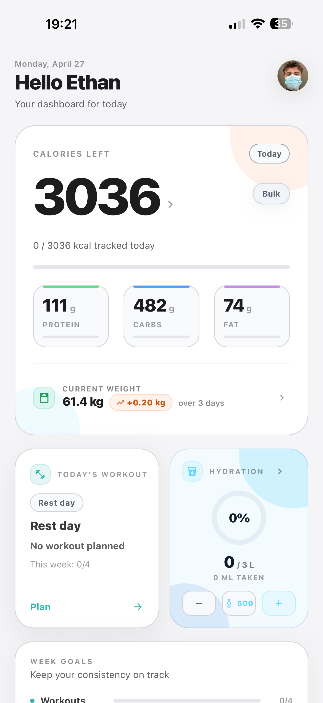
Nutrition
Food log, macros, food search, and barcode scan: Elyra organizes the essentials in one place.
Calories, protein, carbs, and fat are grouped clearly, with the right amount of detail.
Search, scan, and add meals faster, with useful information in the right place.
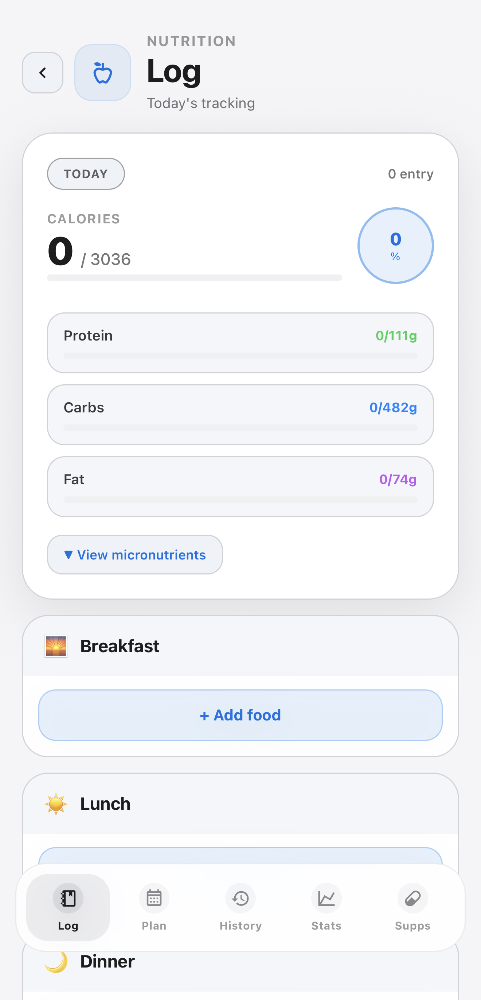
Add meals, mark what is planned, and keep your intake visible before the day gets busy.
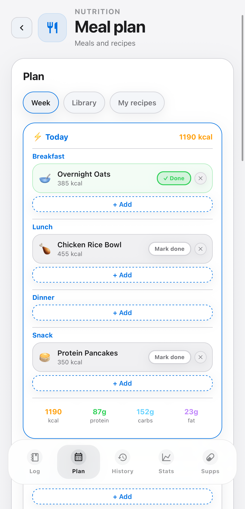
Calories, macros, and micronutrients stay readable so you can adjust with more precision.
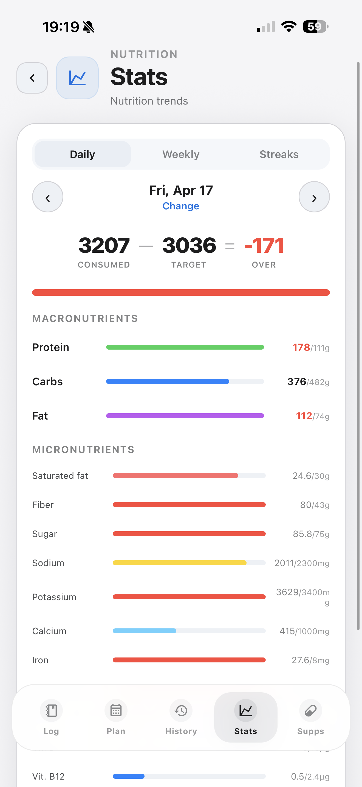
Review ingredients, macros, and steps, then place the recipe directly into your plan.
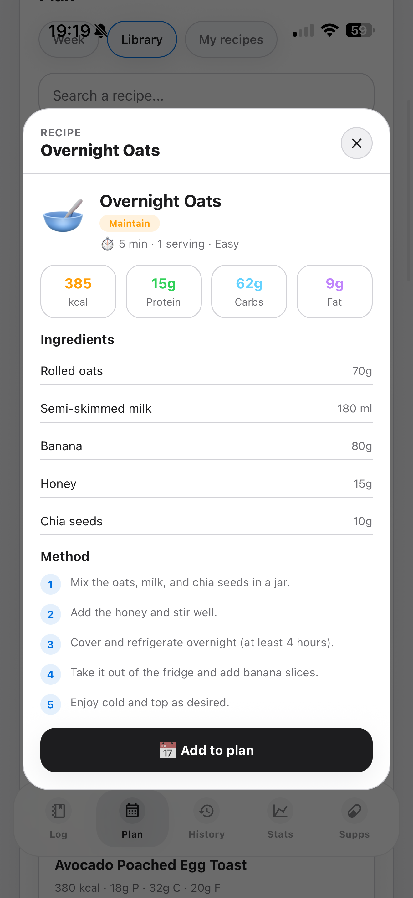
Training
Prepare your workouts, log your sets, and find your history without jumping between screens.
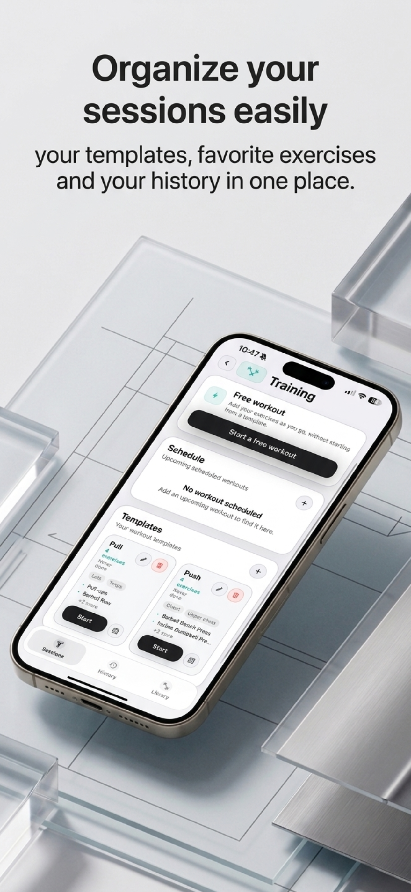
Saved workouts, favorite exercises, and past sessions stay easy to find.
Sets, weights, and rest times stay visible while you train.
History helps you see what is improving, without needing to overthink it.
Details, tips, categories, and history keep every movement easy to review.
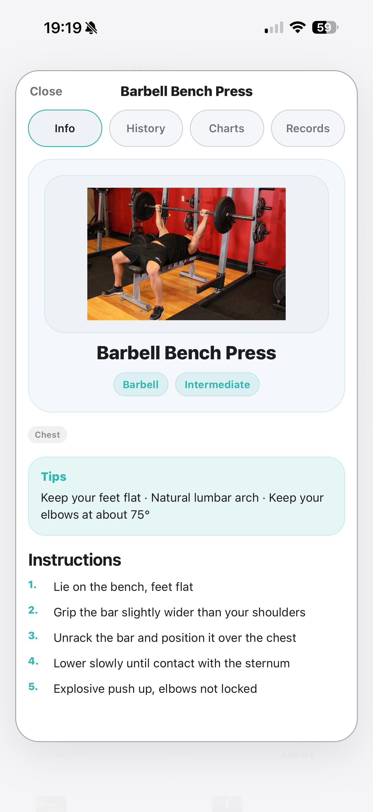
Name the exercise, pick the category, muscle, and equipment, then keep it in your library.
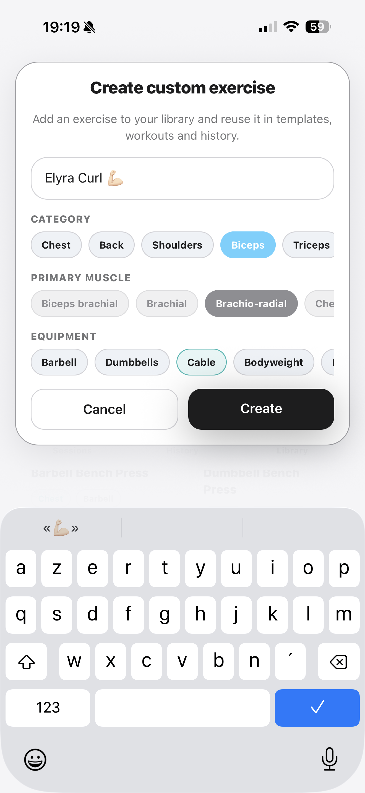
Weight, reps, rest, and sets stay in one clear place as your workout moves forward.
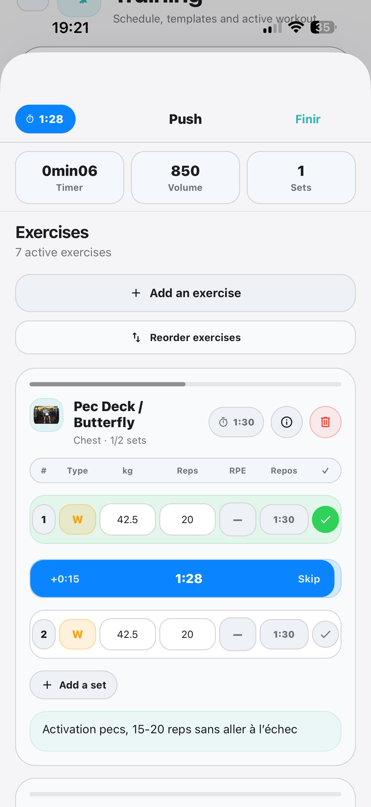
Progress
Weight, goals, workouts, and hydration stay together so you can follow what is changing day after day.
Elyra brings your measurements and history together so you can spot trends, adjust goals, and stay motivated.
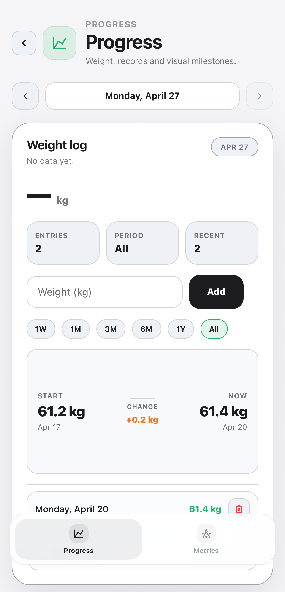
Add a glass, enter a precise volume, and review your last few days without leaving your routine.
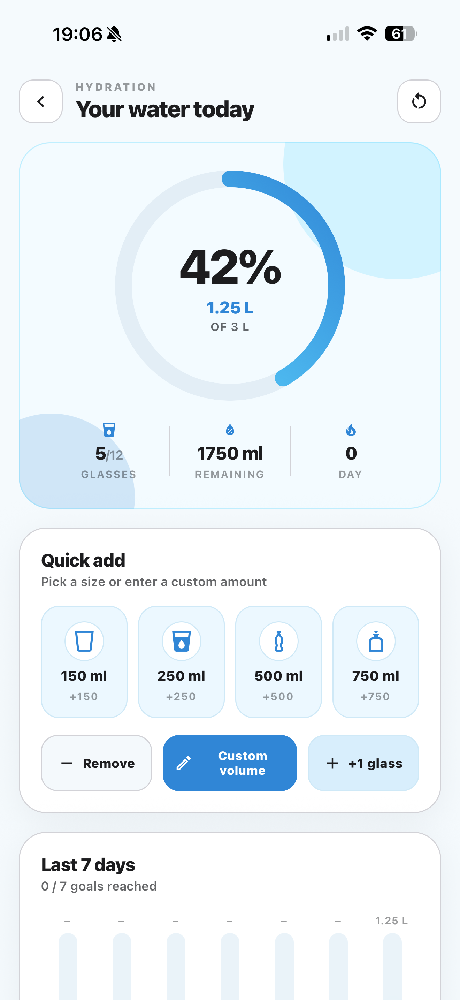
Elyra features
Elyra goes beyond basic tracking: shared workouts, per-side training, and supplements all live in the same app.
Find your Elyra friends, publish workouts, and import sessions that fit your training without rebuilding them by hand.
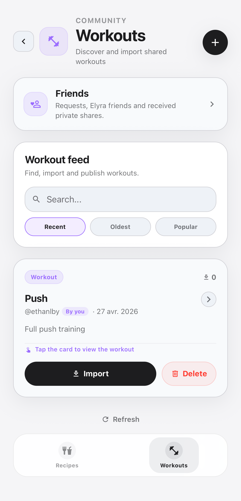
For unilateral exercises, Elyra lets you log weight and reps on each side with the same clean workout flow.
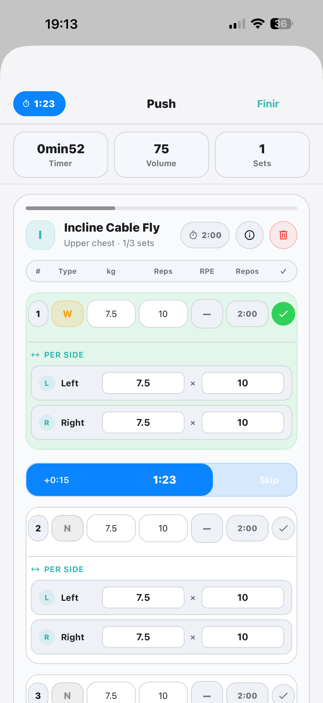
Keep track of supplements, review useful details, and keep a clear record of what you take.
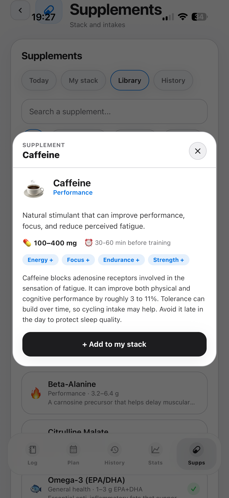
Why Elyra
Screens are made to be understood quickly, with the right information at the right moment.
Nutrition, training, community, supplements, and progress stay together without making tracking feel heavier.
Privacy, support, and account deletion pages stay accessible and easy to find.
FAQ
For people who want nutrition, training, and progress tracking, with community workouts and supplements in an app that feels clear and easy to use every day.
No. Elyra is a personal tracking tool. For medical goals, conditions, or specific constraints, ask a qualified professional.
Account data and information added inside the app, such as nutrition, training, community, supplements, progress, hydration, and profile details. The privacy policy explains those points in more detail.
Account deletion is available from inside the app. A dedicated page also explains the steps and the support contact if anything is difficult.
Elyra on iPhone
Elyra brings nutrition, training, community, supplements, and progress together so tracking your fitness does not become another chore.